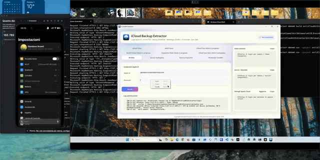
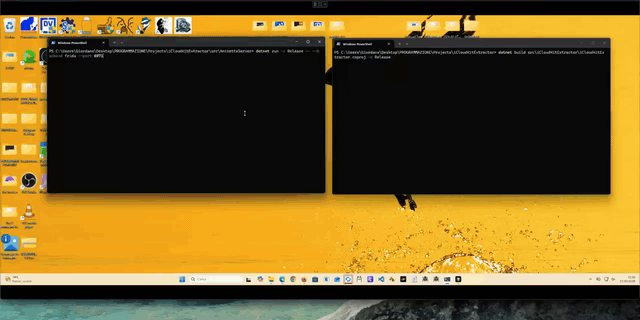
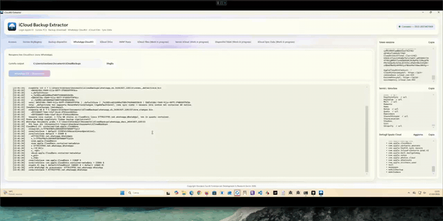
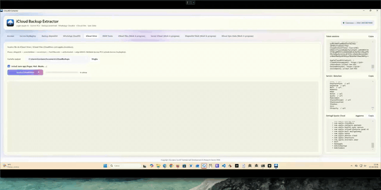
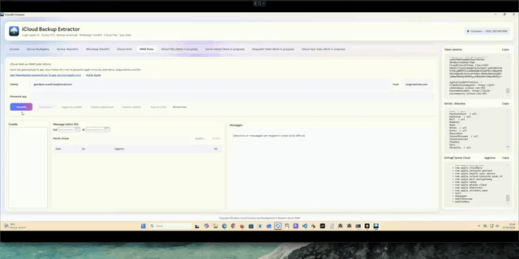
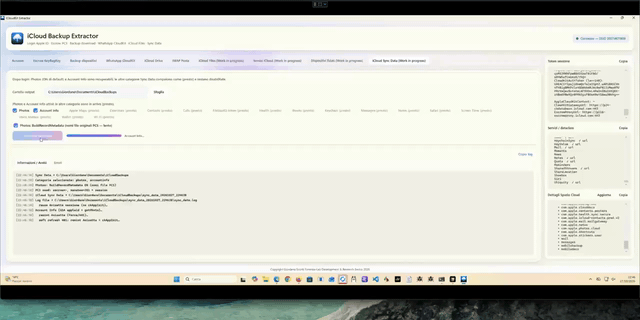

See it running
Screen highlights from real lab sessions—Recovery Key unlock, device backups, WhatsApp CloudKit, Drive, mail, and Photos sync.






Downloads
Windows x64 builds (framework-dependent). Install the .NET 10 Desktop Runtime before launching. Experimental—expect breakage.
Built for extreme recoveries
When CloudKit data is effectively device-bound—and commercial paths fall short—this project explores the private Apple surfaces needed to restore backups and related key material in a controlled forensic setting.
Validated by the author on personal backups with ADP on or off, including scenarios with Lockdown Mode and iCloud.com disabled.
What it targets
CloudKit / MMCS
List devices and download backup payloads through CloudKit authorization and MMCS edge flows.
Octagon / PCS
Recovery Key and PIN paths toward Manatee/PCS keysets for ADP-protected zones and Keychain-related material.
Anisette / Frida
Optional jailbroken-iPhone Frida backend for coherent iPhone/akd identity during GrandSlam auth.
About the author
Giordano Sconti collaborates with the forensic laboratory Forensis-Lab as a software researcher and technical consultant (Consulente Tecnico).
Roughly seven months of research shaped this codebase. Released under MIT; ownership and attribution remain with Forensis-Lab. Highly experimental: Apple’s private APIs can change overnight.
Contribute
Testers, reviewers, and contributors are welcome. Prefer paid coding-agent models over free ones, always re-check generated code, and never land unlicensed third-party code. Pull requests are reviewed carefully.
Prefer recognition for Forensis-Lab over buying a coffee. Preview Anisette access and self-host notes live in the README.